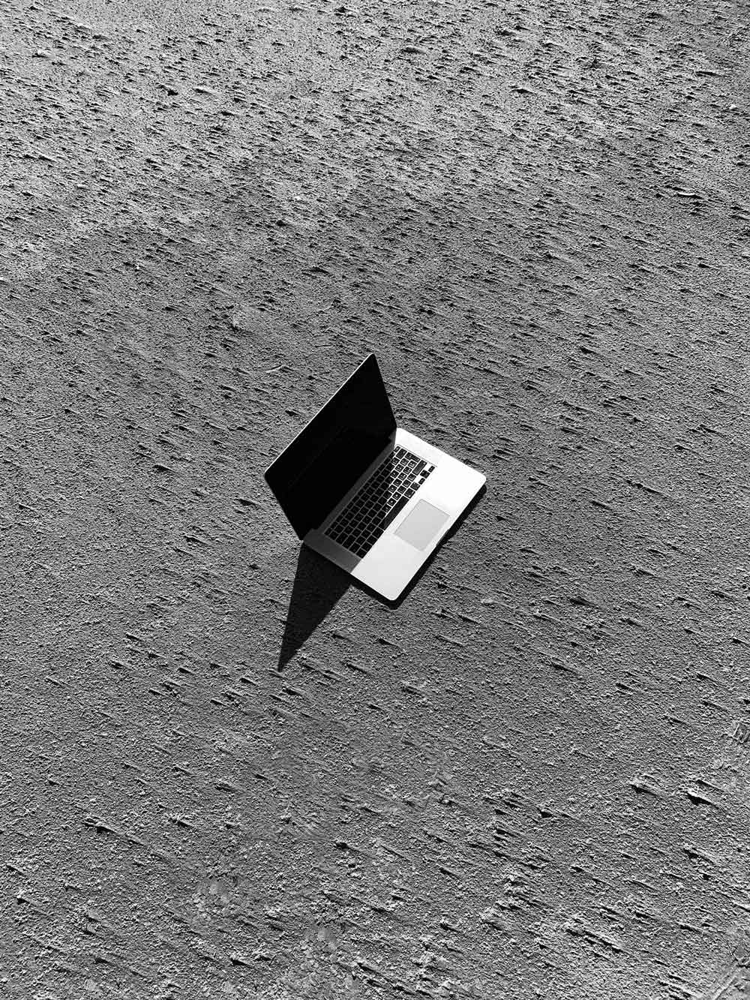

sironij@gmail.com |
+39 392505077 |
@jburrasca |
|---|
I was born in Sondrio, the town where I studied humanities at high school and I started to grow the passion for mountain hiking and landscape photography. The early studies allowed me to develop a human centred vision and a brief knowledge of the latin and greek literature. When in 2016 I moved to Milan to study communication design at Politecnico my previous knowledge helped me to develop an approach to design process based on translation (like I used to do with languages) and focused on people. At Politecnico I learned to handle projects with discipline and organisation, collaborate in work group and grow an openminded way of thinking. Especially during the experience of final project of the bachelor where I was involved in the branding and art direction work for the exhibition WMHH I discovered an aptitude for organisation and design of complex identity systems. I'm also a freelance photographer, a typography addicted an aspirant information designer and an outdoor and travel lover.
